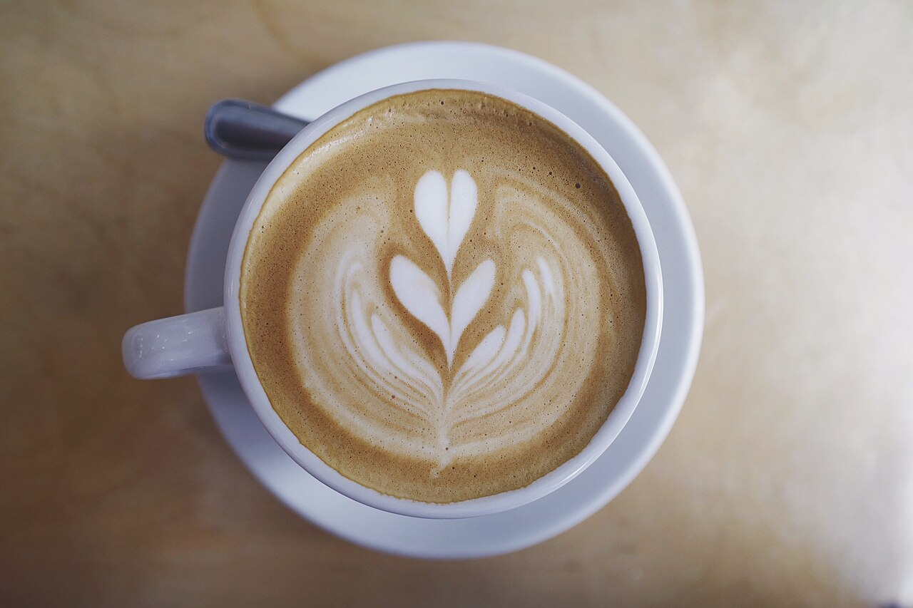
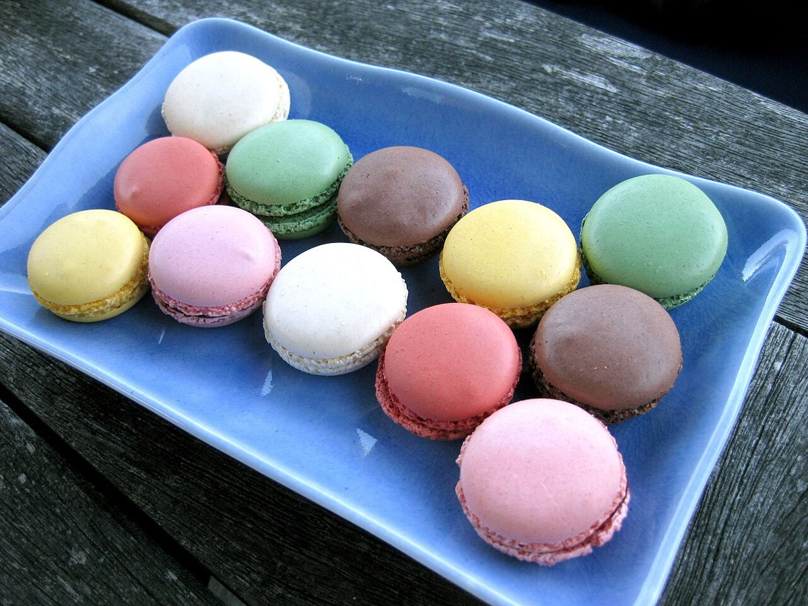
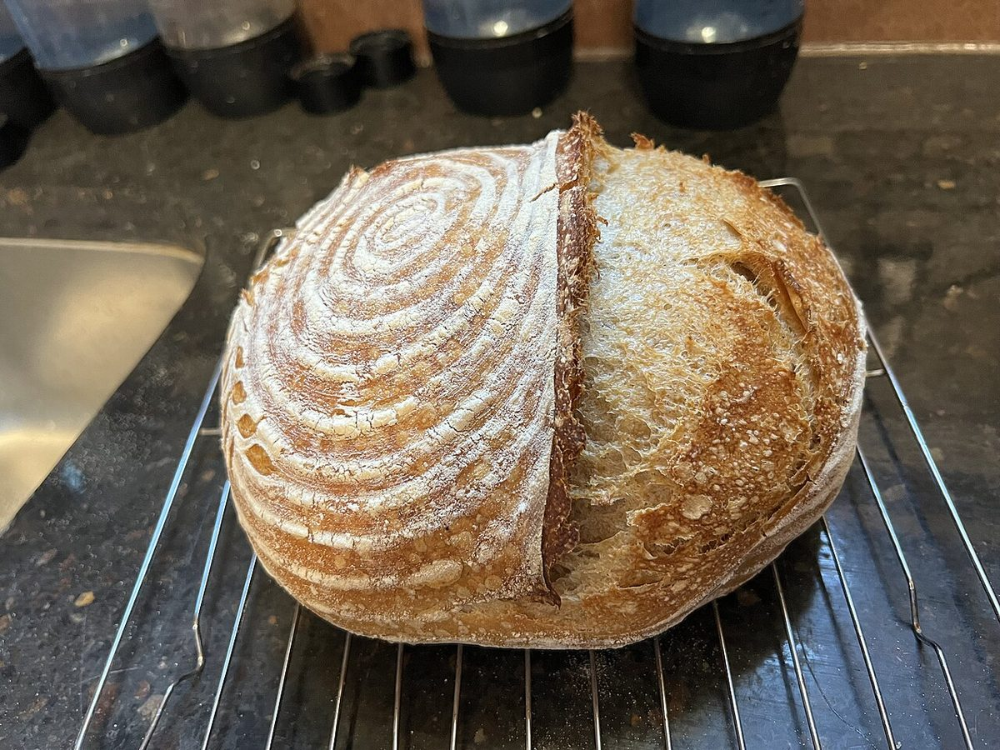

制作側の連想
アイスクリームメーカーを、配置図にしてみる
このサイトは、家庭用のアイスクリームメーカーを断面で描き、六つの部位に番号をふって並べた図を飾りにして作りました。制作側の連想で、お店の理念・由来とは無関係です。実際の製品の仕様を示すものでもありません。
凡例
六つの部位
- 1モーター部上に載る、パドルを回す力を生む本体。
- 2ふた容器の口をふさぎ、冷気を逃がしにくくする円盤状の板。
- 3投入口ふたの中央に開いた、材料を足すための穴。
- 4パドル容器の中でゆっくり回り、材料をかき混ぜる羽根。
- 5フリーザーボウル材料を入れて冷やす、二重壁の容器。
- 6スイッチ本体の前面にある、運転を入れ切りするボタン。
ギャラリー(イメージ)
パンとコーヒーの写真








写真はパンとコーヒーのイメージです。お店のものではなく、お店で提供している商品を示すものでもありません。
ご案内
お店のこと(確認できたものだけ)
| 所在地 | 〒023-0104 岩手県奥州市水沢羽田町駅前１丁目１２７−７ |
|---|---|
| 電話 | 準備中 |
| 営業時間 | 準備中 |
| 定休日 | 準備中 |
| ご予約 | 準備中 |
| 駐車場 | 準備中 |
| SNS | Instagram @boolangerie_cochonnet |